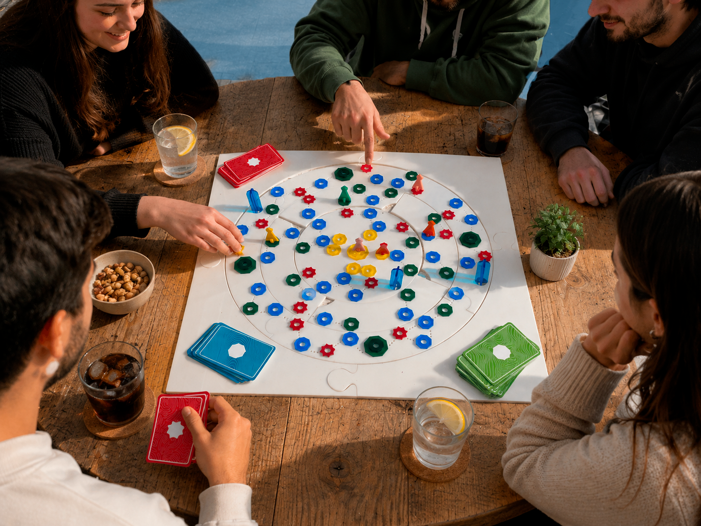
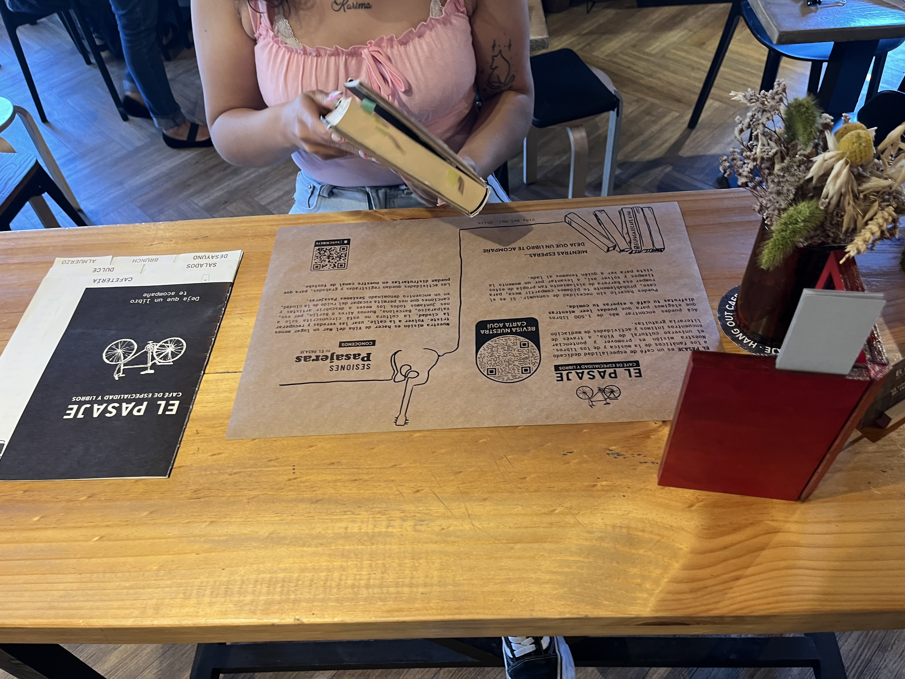
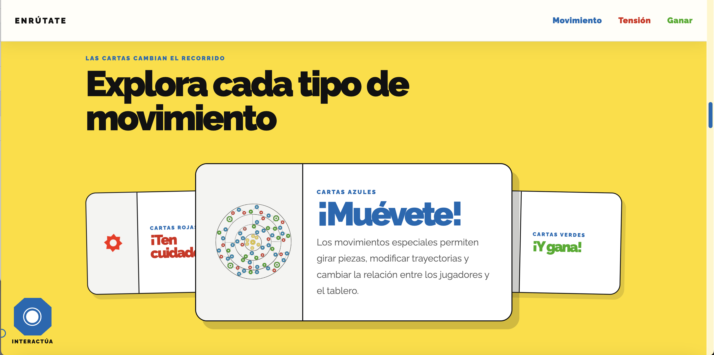
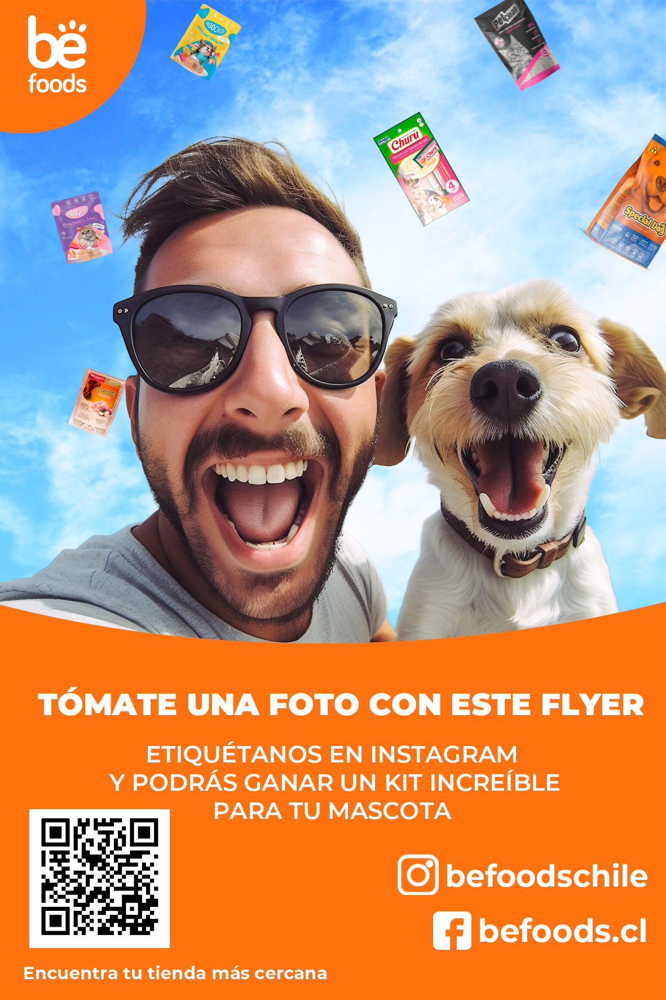
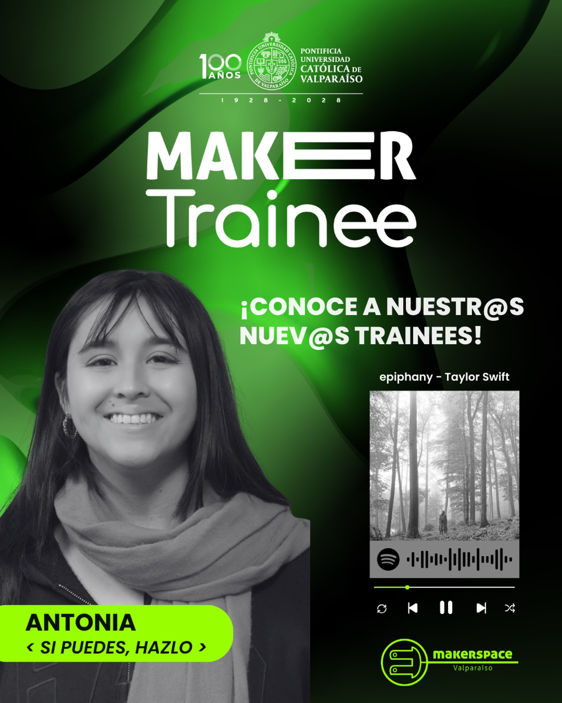
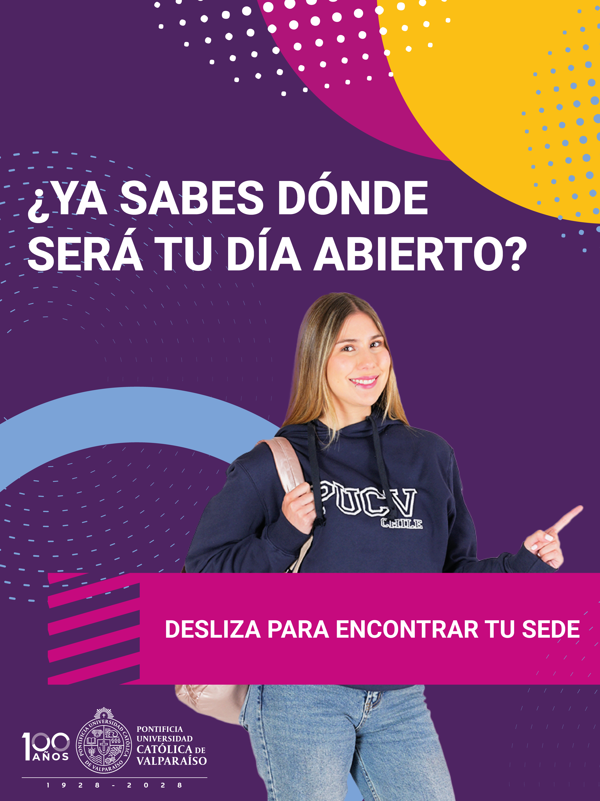

Interacción · 2026
Enrútate
Juego y experiencia interactiva donde las decisiones, el movimiento y los cambios del tablero modifican el recorrido de cada partida.
Ver proyecto académico ↗Portafolio
Una selección de trabajos académicos, proyectos digitales, experiencias de diseño y trabajos desarrollados durante mi formación.

Interacción · 2026
Juego y experiencia interactiva donde las decisiones, el movimiento y los cambios del tablero modifican el recorrido de cada partida.
Ver proyecto académico ↗
Servicios · 2025
Proyecto de Diseño de Servicios desarrollado para una cafetería y librería comunitaria, articulando observación de usuarios, experiencia, piezas gráficas y propuestas digitales.
Ver proyecto académico ↗
Digital · 2024
Aproximación académica al diseño y construcción de una experiencia web, desarrollada en el contexto del trabajo de diseño e interacción vinculado al juego de mesa.
Ver proyecto académico ↗
Pasantía · 2025
Pasantía realizada durante febrero de 2025 en el equipo de marketing de Befoods, participando en tareas vinculadas a comunicación, contenido y diseño.

Pasantía · 2025
Experiencia como Trainee Maker Space en la Pontificia Universidad Católica de Valparaíso, vinculada al trabajo con fabricación, prototipado y herramientas digitales.

Pasantía · 2026-actualidad
Pasantía actual en el equipo de Difusión de Pre y postgrado, participando en tareas vinculadas a comunicación, contenido y diseño.